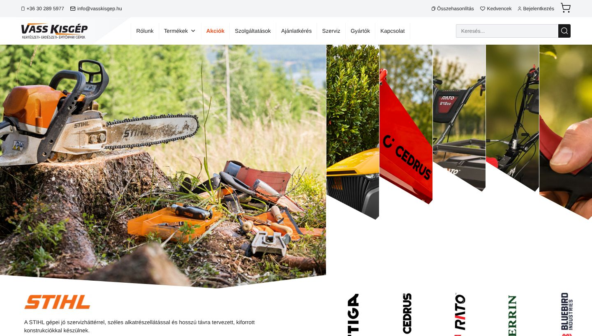
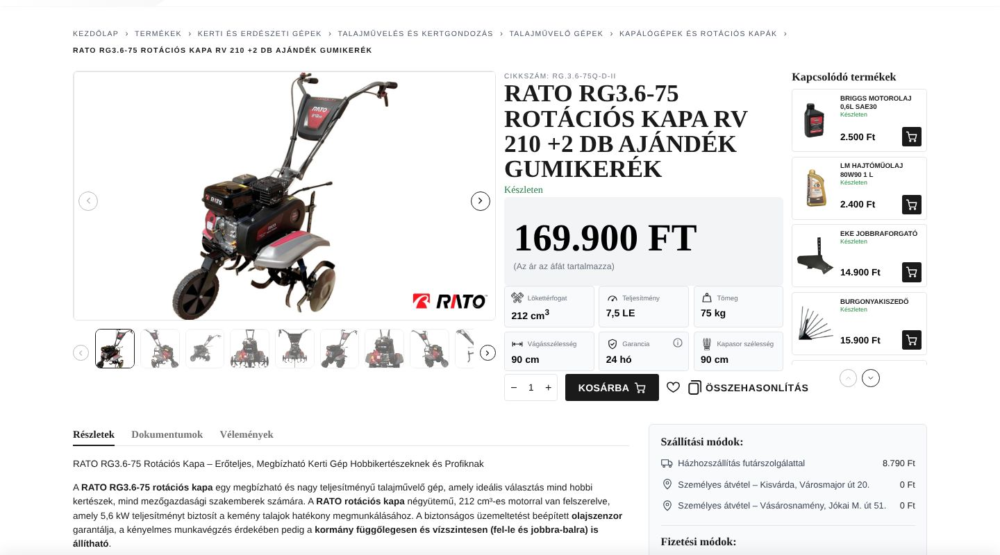
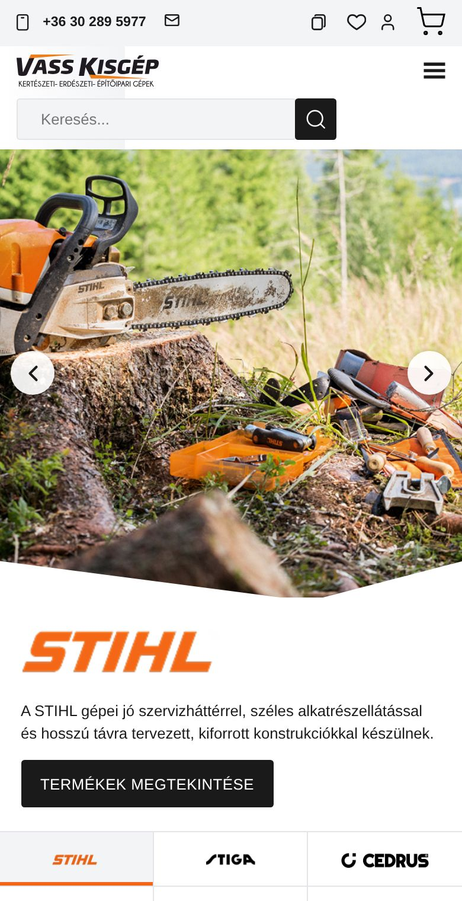
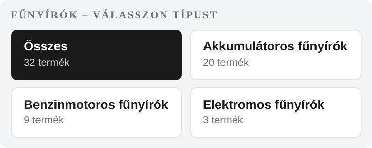
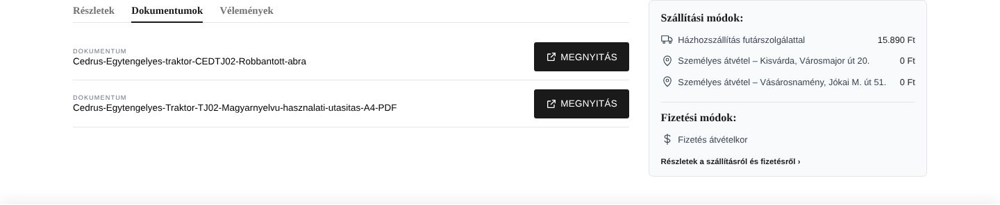
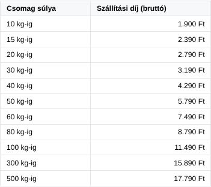

Ez a füzet végigvezet az új webshop mindennapi használatán: hol látod és hogyan kezeled a rendeléseket, hogyan veszel fel és módosítasz termékeket, árakat, készletet és akciókat, hol állítod a szállítást és a fizetést, és mire figyelj havonta. Technikai tudás nem kell hozzá.
DesignBuildGrow
Webshopvasskisgep.hu
Készülta Vass Kisgép 2011 Kft. részére
Átadás2026. október
Tartalom
Minden egy helyen
01Belépés és az admin felület
02A webshop a vásárló szemével
03Rendelések kezelése
04Új termék felvitele
05Termékadatok: ár, készlet, súly, csempék
06Kapcsolódó termékek, dokumentumok, szezon
07Kategóriák, márkák, Gyártók oldal
08Szállítás és fizetés
09Akciók és kiemelt termékek
10Oldalak, Tudástár, űrlapok, értékelések
11Árukereső
12Havi ötperces ellenőrzés és segítség
Egy pillantásra: mit hol találsz
Ezt szeretném
Itt találom
Megnézni az új rendeléseket
WooCommerce → Rendelések
Rendelést lezárni (kiszállítva, átvéve)
a rendelés megnyitása → állapot: Teljesítve → Frissítés
A webshopot a WordPress admin felületén kezeled. Ezt csak ti látjátok, a vásárlók nem férnek hozzá.
Nyisd meg a böngészőben: vasskisgep.hu/wp-admin (az élesítésig a tesztoldalon: dev.otletoldal.hu/vasskisgep-ai/wp-admin).
Írd be a felhasználóneved (vagy e-mail címed) és a jelszavad, majd Belépés. A belépési adatokat Istvántól kapod meg.
Bal oldalon látod a menüt. A legfontosabbak: WooCommerce (rendelések, beállítások), Termékek (termékek, kategóriák, márkák, értékelések), Oldalak, Bejegyzések (Tudástár), Média (képek, PDF-ek).
Elfelejtett jelszó
A belépő oldalon kattints az Elfelejtetted a jelszavad? linkre, add meg az e-mail címed, és a levélben kapott linkkel új jelszót állíthatsz be.
Több munkatárs
Mindenki saját felhasználóval lépjen be, ne használjatok közös jelszót. Új munkatársat Istvánnál kérj, vagy a Felhasználók → Új hozzáadása menüben vehetsz fel. A Boltkezelő szerepkör a rendelésekhez és termékekhez elég.
Használj hosszú, egyedi jelszót, amit máshol nem használsz. A böngésző jelszókezelője segít megjegyezni.
Jelszót, kulcsot ne küldj e-mailben vagy chatben. Ha nekünk kell hozzáférés, saját felhasználót kérünk.
Óvatosan
A Bővítmények, Megjelenés, Sablonok és a Beállítások menük a webshop működését befolyásolják. Ezekhez csak akkor nyúlj, ha velünk egyeztettél. Kivétel: a Cofidis és a Google értékelések beállítása (08. és 10. fejezet).
Vass Kisgép · webshop kézikönyv
02
A webshop a vásárló szemével
Érdemes tudni, mit hol lát a vásárló, mert az admin mezői ezeket töltik ki.

Kezdőlap gépen: felül a márkák (egérrel rámutatva nyílnak), a menüben Termékek (kategóriák lenyitható menüvel), Akciók, Szolgáltatások, Ajánlatkérés, Szerviz, Gyártók, Kapcsolat.

Termékoldal: cikkszám, név, készlet, ár, alatta a csempék (a termék tulajdonságai ikonnal), jobb oldalt a Kapcsolódó termékek kosárba gombbal, lent a Részletek / Dokumentumok / Vélemények fül és a szállítási díj erre a termékre.

Telefonon: felül a telefonszám, a márkák között nyilakkal vagy ujjal húzva lehet lapozni.

Márkaoldal: egy kategóriát választva (pl. STIHL → Fűnyírók) a vásárló típus szerint is szűkíthet. Ezek a gombok a kategóriafából jönnek maguktól.
Vass Kisgép · webshop kézikönyv
03
Rendelések kezelése
Minden rendelés a WooCommerce → Rendelések listába érkezik, és az új rendelésről e-mail értesítést is kaptok.
A rendelés állapotai
Állapot
Mit jelent, mi a teendő
Függőben lévő fizetés
A vásárló online fizetést kezdett (Barion, Cofidis), de még nem fejezte be. Várj; ha pár nap után sem fizet, töröld vagy hívd fel.
Visszatartva
Előre utalásnál: a vásárló megkapta a számlaszámot, várjátok az utalást. Ha megjött, állítsd Feldolgozás alatt-ra.
Feldolgozás alatt
Fizetve (vagy utánvétes / személyes átvételes): csomagolni, szállítani kell. Ebben az állapotban a rendelés még szerkeszthető (tétel, mennyiség, cím).
Teljesítve
Kiszállítva vagy átvéve. A vásárló e-mailt kap róla.
Visszamondva / Visszatérítve
A rendelés elmaradt, illetve a pénzt visszautaltátok.
Egy rendelés lépései
Nyisd meg a rendelést. Látod a tételeket, a szállítási módot (futár vagy személyes átvétel Kisvárdán / Vásárosnaményban), a fizetési módot és a vásárló adatait. Céges vásárlónál ott a cégnév és az adószám is.
Ha kell, módosítsd (amíg Feldolgozás alatt van): tételt adhatsz hozzá vagy vehetsz el, utána Újraszámolás.
Ha átadtátok a futárnak vagy átvették: állapot Teljesítve → Frissítés.
Megjegyzést a jobb oldali Rendelési jegyzetek dobozba írhatsz: belső jegyzetet (csak ti látjátok), vagy a vásárlónak szólót (e-mailben megkapja).
Számla
A Számlázz.hu beállítása után a számla a rendeléshez magától elkészül, és a NAV-nak is bejelentődik. A céges vásárló adószámát a pénztár a NAV-ból ellenőrzi, és kitölti a cégnevet és a címet.
Vass Kisgép · webshop kézikönyv
04
Új termék felvitele
Termékek → Új hozzáadása. A legtöbb mező nem kötelező, de minél több van kitöltve, annál jobban talál meg a vásárló és a Google.
Név felül: ahogy a vásárló keresné (márka, típus, fajta), pl. „STIHL RMA 248 akkumulátoros fűnyíró”.
Leírás (a nagy szövegmező): ez a Részletek fülön jelenik meg. Linket a lánc ikonnal szúrhatsz be; a link végére a webshop magától tesz egy kis „kattints” kéz ikont.
Termékadatok doboz → Általános: normál ár, akciós ár (bruttó, áfával). → Készlet: cikkszám, készlet. → Szállítás: súly kg-ban. → Tulajdonságok: a csempék adatai (05. fejezet).
Rövid leírás (a Termékadatok alatt): 1-2 mondat; a keresőben és a Google-ban ez jelenik meg.
Jobb oldalt: Termékkategóriák (a legpontosabbat jelöld, pl. Benzinmotoros fűnyírók), Márkák, Szezon, Termékkép (főkép) és Termékgaléria (további képek).
Közzététel. Ha még nem kész, Piszkozat mentése: így a vásárlók nem látják.
Képek
Fehér vagy világos hátterű, legalább 1000 px széles fotó a legjobb. A webshop a teljes gépet mutatja, nem vágja négyzetre.
Gyorsabban: másolás
Hasonló gépnél a terméklistában vidd az egeret a meglévő termék fölé → Duplikálás. Utána csak a nevet, árat, cikkszámot, képeket és az eltérő adatokat kell átírni, majd közzétenni.
Vass Kisgép · webshop kézikönyv
05
Termékadatok: ár, készlet, súly, csempék
Ár és akció
Az árakat bruttó (áfás) összegben add meg, egész forintban.
Ha nincs ár, a termékoldalon „Ár egyeztetés alapján” jelenik meg, és nem tehető kosárba.
Akció: töltsd ki az Akciós ár mezőt. Az Időzítés linkkel kezdő- és záródátumot is adhatsz; a végén magától visszaáll a normál ár. Az akciós termékek maguktól bekerülnek a menü Akciók listájába.
Készlet
Beállítás
A vásárló ezt látja
Készleten (vagy darabszám > 0)
Készleten, zöld; az Árukeresőn „Raktáron”.
Rendelésre / 0 darab, utánrendelés engedélyezve
1-5 munkanap visszaigazolástól; rendelhető marad, ahogy a régi webshopban.
Nincs készleten, utánrendelés nélkül
Nem rendelhető.
Súly – fontos!
A Szállítás → Súly (kg) mezőből számolódik a házhozszállítás díja a termékoldalon, a pénztárban és az Árukeresőn is. Ha üres, a webshop a „Tömeg” tulajdonságot nézi. 500 kg felett csak személyes átvétel választható.
Csempék és szűrők (Tulajdonságok)
A termékoldali csempék (Lökettérfogat, Teljesítmény, Tömeg, Vágásszélesség, Garancia …) a Termékadatok → Tulajdonságok fülről jönnek. A listák kártyáin ezekből legfeljebb 6 látszik.
A meglévő tulajdonságot a legördülőből válaszd (pl. Teljesítmény), és a meglévő értékek közül jelölj, vagy írj újat a mértékegységgel együtt (pl. „5,5 LE”). Így működik a szűrő is a kategóriaoldalon.
A régi webshopból jött termékeknél ezek az adatok már ki vannak töltve; újnál érdemes egy hasonló termékről másolni (Duplikálás).
További mezők az Általános fülön
Promóciós szöveg: rövid kiemelés a termékkártyán és a képen (pl. „Ingyenes szállítás!”), soronként egy.
Cofidis áruhitel: bejelölve a termékoldalon megjelenik a Cofidis jelvény és a törlesztőrészlet-kalkulátor.
Tájékoztató doboz: kiemelt doboz a Részletek fül tetején (pl. „Személyes átvétel esetén az ár tartalmazza az összeszerelést és a beüzemelést.”).
Vass Kisgép · webshop kézikönyv
06
Kapcsolódó termékek, dokumentumok, szezon
Kapcsolódó termékek (jobb oldali lista)
Termékadatok → Összekapcsolt termékek → Keresztértékesítés: kezdd el beírni a termék nevét vagy cikkszámát, és válaszd ki (pl. a géphez való olajat, kereket, ekét). A termékoldalon jobb oldalt kosárba gombbal jelennek meg. A régi webshop kapcsolódó termékeit átvettük; ezeket itt bármikor módosíthatod.
Termékadatok → Általános → Dokumentumok kiválasztása.
Tölts fel PDF-et, vagy válassz a már feltöltöttek közül (több is kijelölhető), majd Kiválasztás.
A fájl címe lesz a dokumentum neve a termékoldalon: a Médiatárban átírhatod beszédesebbre (pl. „Használati utasítás”).

A Dokumentumok fül: a fájl új lapon, a böngészőben nyílik meg.
Szezon
A termékszerkesztő jobb oldalán a Szezon dobozban jelöld, melyik évszakban ajánlod (tavasz, nyár, ősz, tél; több is lehet). A kezdőlap „Szezonális termékek” sávja mindig az aktuális évszak termékeit mutatja. Sok termékhez egyszerre: a terméklistában jelöld ki őket → Tömeges műveletek: Szerkesztés → Szezon.
Vass Kisgép · webshop kézikönyv
07
Kategóriák, márkák, Gyártók oldal
Kategóriák
Termékek → Kategóriák: a négy főág (Kerti és erdészeti gépek, Építőipari gépek, Alkatrészek és karbantartás, Tartozékok) és alattuk az alkategóriák. A menü és a fejléc lenyíló menüje ebből épül, magától frissül.
Egy terméket mindig a legpontosabb (legalsó) kategóriába tegyél: így jelenik meg a márkaoldali típusválasztóban és a szülő kategóriákban is.
Kategóriát ne törölj, ha van benne termék; átnevezni nyugodtan lehet.
Márkák és a Gyártók oldal
Termékek → Márkák: itt adhatsz meg új márkát, és itt cserélheted a logót (a márka szerkesztése → kép). A logó a termékoldalon, a fejléc Gyártók fülén és a Gyártók oldalon jelenik meg.
A Gyártók oldal (menü → Gyártók) minden márkát mutat, amelynek van terméke, a termékek számával; magától frissül.
Egy márka oldalán a kategóriák képes csempékben jelennek meg; egy csempét választva a vásárló típus szerint is szűkíthet (pl. akkumulátoros, benzinmotoros, elektromos).
Kezdőlapi márkák
A kezdőlap felső részén hat fő márka van (STIHL, Stiga, Cedrus, Rato, Berrin, Bluebird) saját képpel és szöveggel. Ha képet vagy sorrendet cserélnétek, szólj nekünk, és megcsináljuk.
Vass Kisgép · webshop kézikönyv
08
Szállítás és fizetés
Házhozszállítás súly szerint

A díjtábla a Szállítás és fizetés oldalon; mindig a beállított díjakat mutatja.
A díj a kosár teljes súlya szerint jár, a régi webshop díjtáblája alapján.
30 000 Ft felett 10 kg-ig ingyenes.
500 kg felett nincs házhozszállítás: a pénztár csak a személyes átvételt kínálja, és ezt meg is írja a vásárlónak.
Személyes átvétel Kisvárdán és Vásárosnaményban: ingyenes.
Módosítás:WooCommerce → Beállítások → Szállítás → Magyarország → a „Házhozszállítás futárszolgálattal” (Súly szerinti házhozszállítás) sor → Szerkesztés. A díjtáblában soronként: kg-ig | bruttó Ft. Itt állíthatod az ingyenes szállítás értékhatárát és súlyhatárát is (pl. kampányhoz).
Fizetési módok
Fizetési mód
Tudnivaló
Bankkártya (Barion)
Online fizetés; sikeres fizetés után a rendelés Feldolgozás alatt lesz.
Előre utalás
A vásárló e-mailben megkapja a számlaszámot; a rendelés Visszatartva, amíg az utalás meg nem jön.
Fizetés átvételkor
Utánvét a futárnál, vagy fizetés személyes átvételkor.
Cofidis áruhitel
Csak a Cofidis-jelölt termékeknél. A kalkulátor adatai (THM, kamat, futamidők, min./max. összeg): Megjelenés → Beállítások → Cofidis áruhitel, a Cofidistól kapott érvényes értékekkel.
Fizetési módot a WooCommerce → Beállítások → Fizetés oldalon kapcsolhatsz ki vagy be. A Barion és a Számlázz.hu kulcsait mi állítjuk be; ezekhez ne nyúlj.
Vass Kisgép · webshop kézikönyv
09
Akciók és kiemelt termékek
Akció: akciós ár a terméknél (05. fejezet), időzítéssel is. A termékoldalon áthúzva látszik a régi ár és a kedvezmény százaléka, a termék bekerül a menü Akciók listájába.
Kiemelt termék: a terméklistában (Termékek) a csillagra kattintva. A kiemeltek elöl jelennek meg a listákban és a kezdőlap Kiemelt termékek sávjában.
Szezonális ajánlat: a Szezon jelölés (06. fejezet); a kezdőlap magától az aktuális évszakhoz váltja.
Sorrend a listákban: kiemelt → gép (a tartozékok és alkatrészek hátrébb) → készleten → legújabb. Egy kategórián belül ár szerint növekvő az alapértelmezés, ezt a vásárló átállíthatja.
10 Oldalak, Tudástár, űrlapok, értékelések
Oldalak (Rólunk, Szolgáltatások, Szerviz, Kapcsolat, Szállítás és fizetés, ÁSZF, Adatkezelés): Oldalak → az oldal → Szerkesztés. Szöveget, képet nyugodtan cserélj; a dobozok elrendezését inkább hagyd, vagy szólj nekünk.
Tudástár (cikkek, tanácsok): Bejegyzések → Új bejegyzés: cím, szöveg, kiemelt kép, közzététel. A webshop keresője a cikkeket is megtalálja.
Űrlapok (visszahívás, ajánlatkérés, szervizbejelentés, kapcsolat, termékkérdés): a kitöltött űrlap e-mailben érkezik az info@vasskisgep.hu címre; válaszolni egyszerűen a levélre válaszolva tudsz.
Google értékelések a kezdőlapon: Megjelenés → Beállítások → Google értékelések (a beállítást mi végezzük).
Vass Kisgép · webshop kézikönyv
11
Árukereső
Az új webshop magától készít terméklistát az Árukeresőnek: vasskisgep.hu/arukereso.xml. Óránként és minden termékmentéskor frissül.
Benne van minden látható, áras, rendelhető termék: név, márka, kategória, ár, képek, rövid leírás, cikkszám.
Készlet: a készleten lévő termék az Árukeresőn „Raktáron”, a rendelésre kapható legfeljebb 5 munkanapos szállítással jelenik meg.
Szállítási díj: a súly szerinti díjtáblából, egy darabra; 30 000 Ft felett 10 kg-ig „ingyenes”. Súly nélküli terméknél az Árukereső fiókban beállított díj számít, ezért érdemes a súlyt kitölteni.
Élesítéskor az Árukereső Partner Portálon a régi lista címét erre kell átírni; ebben segítünk.
12 Havi ötperces ellenőrzés és segítség
Teszt: tegyél kosárba egy terméket telefonon, és menj el a pénztárig.Megjelenik a szállítási díj és a fizetési módok? (Rendelést nem kell leadni.)
Nézd át a Feldolgozás alatt és Visszatartva rendeléseket.Nincs-e elfelejtett, régóta álló rendelés?
Jöttek-e űrlapok és értékelések, és mind kapott-e választ?
Akciók: lejárt-e valamelyik, és kell-e új (szezon)?
Új termékeknél: van ár, súly, kép, kategória, márka?
Ha a WordPress frissítést jelez: szólj nekünk, mi frissítjük (mentéssel együtt).
Ha valami nem úgy működik
Jelenség
Mit tegyél
Egy termék nem látszik a boltban
Közzétéve? Van ára? A Katalógus láthatóság (jobb oldalt, Közzététel doboz) „Bolt és keresési találatok”?
Nincs szállítási díj, csak átvétel
A kosár súlya 500 kg feletti, vagy a terméknél rossz a súly (pl. g-ban van kg helyett).
A módosítás nem látszik
Frissítsd az oldalt (Ctrl + F5), vagy nézd meg privát ablakban.
Bármi más
Írj nekünk a portálon, egy képernyőképpel; vagy hívd Áront.
 HelloProVision
HelloProVision